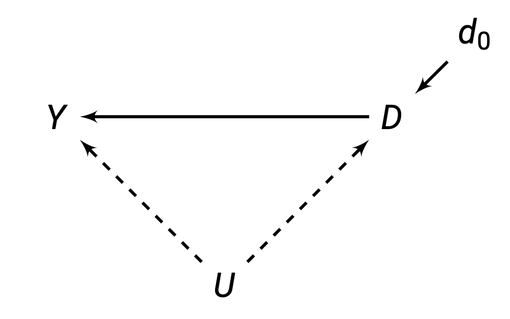

Summary
Randomisation
Randomised Experiments
Experiments are a research design where the assignment mechanism is controlled by the researcher.
Randomised Experiments use randomisation as the assignment mechanism. Treatment values are assigned to N units at random, with both known and positive probabilities of being assigned to treatment and control groups.
Quick notation for randomised experiments:
- We have N total number of units in our experiment.
- A randomly subset of N_1 units are assigned to treatment D = 1.
- The remaining N_0 = N - N_1 are assigned to control.
Rewatch the section on Bernoulli.
Independence and Unconfoundness
Randomisation implies that assignment probabilities, do not depend on the potential outcomes. The potential outcome values do not affect our chances of being selected for treatment.
Pr(D=1|Y_0, Y_1) = Pr(D=1)
Or in other words, treatment is independent of potential outcomes (or unconfounded):
(Y_1, Y_0) \perp D
This implies that E(Y_{0i}) is the same between treatment and control groups, and E(Y_{1i}) is also the same between treatment and control:
\begin{split} & E(Y_{0i} | D_i = 1) = E(Y_{0i} | D_i = 0) = E(Y_{0i})\\ & E(Y_{1i} | D_i = 1) = E(Y_{1i} | D_i = 0) = E(Y_{1i}) \end{split}
Randomisation and Selection Bias
Let us return to our naive estimator comparing observed outcomes (from the last chapter), and our problem of selection bias:
\hat\tau_{\text{naive}} = \underbrace{E(Y_{1i}|D_i = 1)- E(Y_{0i}|D_i = 1)}_{\tau_{ATT}} + \underbrace{E(Y_{0i}|D_i = 1) - E(Y_{0i} | D_i = 0)}_{\text{Selection Bias}}
But as discussed before, under randomisation, we know that:
\begin{split} & E(Y_{0i} | D_i = 1) = E(Y_{0i} | D_i = 0) = E(Y_{0i})\\ & E(Y_{1i} | D_i = 1) = E(Y_{1i} | D_i = 0) = E(Y_{1i}) \end{split}
Using these properties, we can simplify:
\begin{split} \hat\tau_{\text{naive}} & = \underbrace{E(Y_{1i}|D_i = 1)- E(Y_{0i}|D_i = 1)}_{\tau_{ATT}} + \underbrace{E(Y_{0i}|D_i = 1) - E(Y_{0i} | D_i = 0)}_{\text{Selection Bias}} \\ & = \underbrace{E(Y_{1i})- E(Y_{0i}|D_i = 1)}_{\tau_{ATT}} + \underbrace{E(Y_{0i}) - E(Y_{0i})}_{\text{Selection Bias}} \\ & = \underbrace{E(Y_{1i}|D_i = 1)- E(Y_{0i}|D_i = 1)}_{\tau_{ATT}} + 0 \end{split}
Thus, under randomisation, selection bias is equal to 0, and thus our comparison of observed outcomes is now an unbiased estimator of the Average Treatment Effect on the Treated (ATT).
Equivalence of Estimands
Recall that randomisation (and independence from potential outcomes) says:
\begin{split} & E(Y_{0i} | D_i = 1) = E(Y_{0i} | D_i = 0) = E(Y_{0i})\\ & E(Y_{1i} | D_i = 1) = E(Y_{1i} | D_i = 0) = E(Y_{1i}) \end{split}
We can simplify all of our estimands using these properties:
\tau_{ATE} = E(Y_{1i}) - E(Y_{0i})
\begin{split} \tau_{ATT} = \end{split}
And now we see that all the estimands are equivalent under randomisation.
Graphical Representation
Let us look at a direct acyclic graph:

Because we are randomly assigning treatment D, we are exogenously determining D. Thus, values of D are not being caused by U, they are being caused by randomisation.
Thus, we can eliminate the arrow between U \rightarrow D. This allows us to estimate D \rightarrow Y without any confounders.
The Balancing Property
Randomisation balances all observed and unobserved pre-treatment characteristics between units between the treatment and control.
This is because not only is (Y_1, Y_0) \perp D, but also any covariate X is also independent of treatment: X \perp D.
This means that if randomisation is successful, we should expect minimal differences between control and treatment groups for all pre-treatment characteristics values.
In any one sample, we actually are likely to have some imbalances in X between control and treatment simply due to chance.
- You could control for imbalanced covariates, but you do not have to (we will discuss this later).
You can adopt other randomisation procedures, such as stratified randomisation, to guarantee balance on X.
We can text this assumption by finding the average X values for both control and treatment groups, and see if there are any statistical significant differences in X between control and treatment.
Complications and Limitations
Randomisation can be complicated by a few factors:
- Missing data (often due to individuals dropping out). We are concerned that there is some covariate that is causing some people to drop out, which re-introduces selection bias.
- Measurement Problems: Hawthorne Effect - subjects know what you are studying, and will change their behaviour as a result.
- Non-Compliance: Some units assigned to treatment might not take the treatment, and some units assigned to control may take the treatment.
Randomisation does not help with external validity - the ability to extrapolate our results to external situations.
Add notes here from GV481 and Lecture
Causal Estimation
Difference in Means Estimator
Our causal estimand is the Average Treatment Effect (ATE):
\tau_{ATE} = E(Y_1) - E(Y_0)
We can estimate this using the difference-in-means estimator, by taking the sample mean Y of the treatment group, minus the sample mean Y of the control group:
\hat\tau_{ATE} = \bar Y_1 - \bar Y_0
This is an unbiased estimator because selection bias is eliminated with randomisation.
Ordinary Least Squares Estimator
We can also estimate the \tau_{ATE} with a bivariate regression:
Y_i = \hat\gamma + \hat\tau D_i + \hat\epsilon_i
Here, \hat\tau is our estimator of the ATE. This gives the same estimate as the difference-in-means estimator.
Notes
Furthermore, \hat\gamma is equivalent to the average Y in the control group \bar Y_0.
We do not need to include covariates. This is because randomisation allows us to meet the asymptotic consistency condition of both randomisation and exogeneity.
However, sometimes pre-treatment covariates are included. We should not include post-treatment covariates.
There are several reasons one might want to include pre-treatment covariates:
- Can increase precision (reduce standard error), by getting better predictions of Y.
- Can control for observable imbalance that was observed in the balance tables. Many researchers will compare a model without and with an imbalanced covariate, to show that the covariate does not matter significantly.
- Can allow for estimation of heterogenous treatment effects by including interactions in the model.
There is one risk: it may introduce small-sample bias. This will be discussed later in the discussion of the fully-interacted estimator.
We should not include post-treatment covariates. Anything that is measured post-treatment could be measuring a treatment effect (something that results from the treatment). This may “model away” your treatment effect.
Statistical Inference
Inference with T-Test
We can use a t-test for statistical inference.
- Estimate the \hat\tau_{ATE} and robust standard error \widehat{rse}(\hat\tau_{ATE}).
- State hypotheses, normally H_0 : \tau_{ATE} = 0 and H_1 \tau_{ATE} ≠ 0.
- Calculate the t-test statistic \hat\tau /\widehat{rse}(\hat\tau).
- Refer to the relevant t-distribution, and calculate the p-value.
Generally, we use a statistical significance level of \alpha = 0.05, so we reject the null if |t|>1.96.
For more complex randomisation schemes, you will need different standard errors. For example, if you use a cluster randomisation scheme, you might need clustered standard errors.